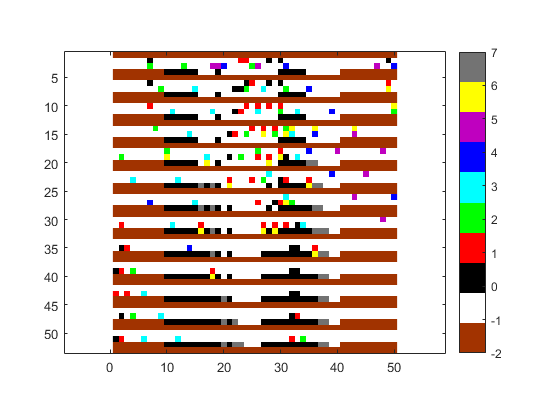
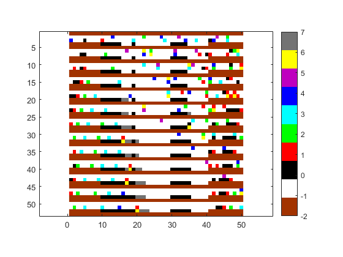
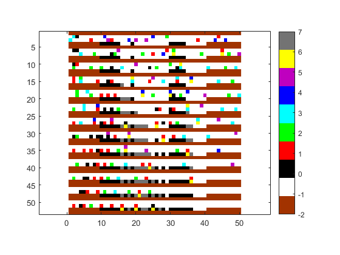
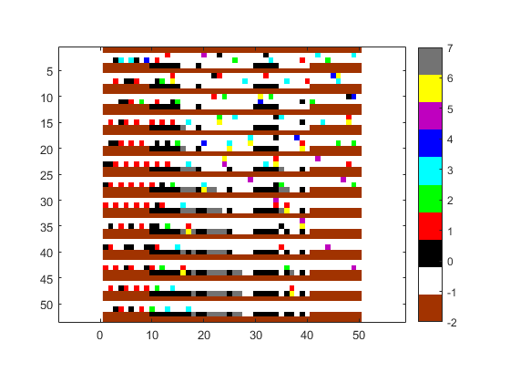
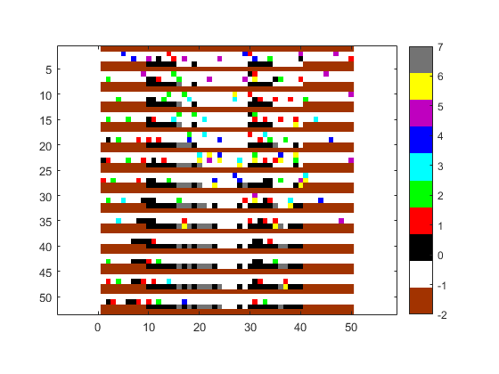

clear;
clc;
X = importdata('test_data.txt');
mymap = [0.6350 0.2 0
1 1 1
0 0 0
1 0 0
0 1 0
0 1 1
0 0 1
0.75 0 0.75
1 1 0
0.45 0.45 0.45];
ch_slower_lane = 0.55;
max_prob_ch_hispe = 0.65;
new_car_prob = 0.7;
dec_prob = 0.25;
rand_park = 0.15;
first_park = 10;
last_park = 40;
cars1 = 6;
cars2 = 10;
for pub=1:5
full_road = zeros(49,60);
full_road(:,:) = -2;
lane(1:2,1:60) = -1;
if (0)
lane(2,:) = X(:,1)';
else
index_lane1 = randsample(50,cars1)';
index_lane2 = randsample(50,cars2)';
lane(1,index_lane1) = randi([0 5],1,cars1);
lane(2,index_lane2) = randi([0 5],1,cars2);
end
if(pub == 1)
[d,c] = size(lane);
end
par_slots = zeros(1,c);
par_slots(1,:) = -2;
par_slots(1,first_park:last_park) = -1;
par_slots(1,first_park:15)=0;
par_slots(1,19)=0;
par_slots(1,30:34)=0;
lane(3,:) = par_slots;
park_signals = zeros(d,c);
park_flags = zeros(1,c);
park_flags(1,first_park:last_park) = 0;
park_signals(1,index_lane1) = rand(1,cars1)/2;
park_signals(2,index_lane2) = rand(1,cars2)/2;
full_road(2,:) = lane(1,:);
full_road(3,:) = lane(2,:);
full_road(4,:) = lane(3,:);
[iter,~] = size(full_road);
full_road(iter+d+2,:) = -2;
for e=4:4:iter
change_signals = zeros(d+1,c);
if ((lane(2,1) == -1) && (rand(1)>1-new_car_prob))
lane(2,1) = 1;
park_signals(2,1) = rand;
end
park_signals(park_signals>1) = 1;
park_signals(park_signals<0) = -0.01;
park_signals(:,51:60) = 0;
lane(1:2,51:60) = -1;
for j=c-10:-1:1
for i=1:d
moved = 0;
speed = lane(i,j);
if(speed>=0)
if(speed<5)
next_spot = j;
next_speed = speed;
if(lane(i,j+1:j+speed+1)==-1)
lane(i,j) = -1;
lane(i,j+speed) = speed + 1;
next_speed = lane(i,j+speed);
next_spot = j+speed;
moved = 1;
end
end
if(lane(i,j+1:j+speed)==-1)
lane(i,j) = -1;
lane(i,j+speed) = speed;
next_speed = lane(i,j+speed);
next_spot = j+speed;
moved = 1;
end
if(moved)
if(max(lane(i,j+speed+1:j+speed+next_speed))~=-1)
found = 0;
count = 0;
for k=j+1+speed:j+speed+next_speed
count = count+1;
if((~found)&&(lane(i,k)>=0))
found = 1;
lane(i,j+speed) = count-1;
next_speed = count-1;
next_spot = j+speed;
end
end
end
else
if(max(lane(i,j+1:j+speed))~=-1)
found = 0;
count = 0;
for k=j+1:j+speed
count = count+1;
if((~found)&&(lane(i,k)>=0))
found = 1;
lane(i,j) = -1;
lane(i,j+count-1) = 0;
next_speed = 0;
next_spot = j+count-1;
end
end
end
end
spot = find(park_flags == j);
if(i==d & spot)
park_flags(spot) = next_spot;
if(next_spot>=spot)
lane(i,spot) = 1;
lane(d+1,spot) = -1;
park_flags(spot) = 0;
if(spot ~=next_spot)
lane(i,next_spot) = -1;
end
end
end
end
end
end
park_signals(find(lane(1:2,:)>=0)) = park_signals(find(park_signals~=0));
park_signals(find(lane(1:2,:)<0)) = 0;
decreased = 0;
for j=c-10:-1:1
for i=1:d
rand_dec = lane(i,j);
if(rand_dec>0 && rand_dec<=5)
if ((lane(i,j) ~= -1) && (rand(1)>1-dec_prob))
lane(i,j) = rand_dec-1;
decreased = 1;
end
end
if (decreased)
rand_dec = rand_dec-1;
end
if(rand_dec>=0 && park_signals(i,j)<1)
if(rand_dec>3)
park_signals(i,j) = park_signals(i,j)-(0.55/rand_dec);
else
park_signals(i,j) = park_signals(i,j)+0.2;
end
end
if((i>1) && (rand_dec>0) && ((rand(1)*(rand_dec/5))>1-max_prob_ch_hispe))
change_signals(i,j) = 1;
elseif((i<d) && (rand_dec>0) && (rand(1)*((6-rand_dec)/5)>1-ch_slower_lane))
change_signals(i,j) = -1;
end
if(park_signals(i,j) >= 1)
change_signals(i,j) = -1;
end
end
end
temp = lane;
for i=1:d+1
if(i<d+1)
idx_l = find(change_signals(i+1,:)==1);
vac_sp_l = lane(i,idx_l)==-1;
temp(i,idx_l(vac_sp_l)) = 6;
lane(i,idx_l(vac_sp_l)) = lane(i+1,idx_l(vac_sp_l));
lane(i+1,idx_l(vac_sp_l)) = -1;
change_signals(i+1,idx_l(vac_sp_l)) = 0;
end
if(i>=2)
idx_r = find(change_signals(i-1,:)==-1);
vac_sp_r = lane(i,idx_r)==-1;
temp(i,idx_r(vac_sp_r)) = 6;
if(i==d+1)
park_signals(i-1,idx_r(vac_sp_r)) = 0;
lane(i,idx_r(vac_sp_r)) = 0;
else
lane(i,idx_r(vac_sp_r)) = lane(i-1,idx_r(vac_sp_r));
end
lane(i-1,idx_r(vac_sp_r)) = -1;
change_signals(i-1,idx_r(vac_sp_r)) = 0;
end
end
idx_park = find(park_signals(d,1:last_park)>=1);
exclude_already_flagged = park_flags(find(park_flags~=0));
park_spot = lane(d+1,idx_park) == -1;
park_temp = idx_park(~park_spot);
park_temp = setdiff(park_temp,exclude_already_flagged);
for s=length(park_temp):-1:1
temp_idx = find(lane(d+1,park_temp(s)+1:end) == -1,1)+park_temp(s);
park_flags(1,temp_idx) = park_temp(s);
temp(d+1,temp_idx) = 7;
lane(d+1,temp_idx) = 7;
end
full_road(e+d:e+d+2,:) = temp(1:d+1,:);
end
figure
imagesc(full_road(:,1:50));
colormap(mymap); axis equal;
colorbar
caxis([-2 7])
end
    